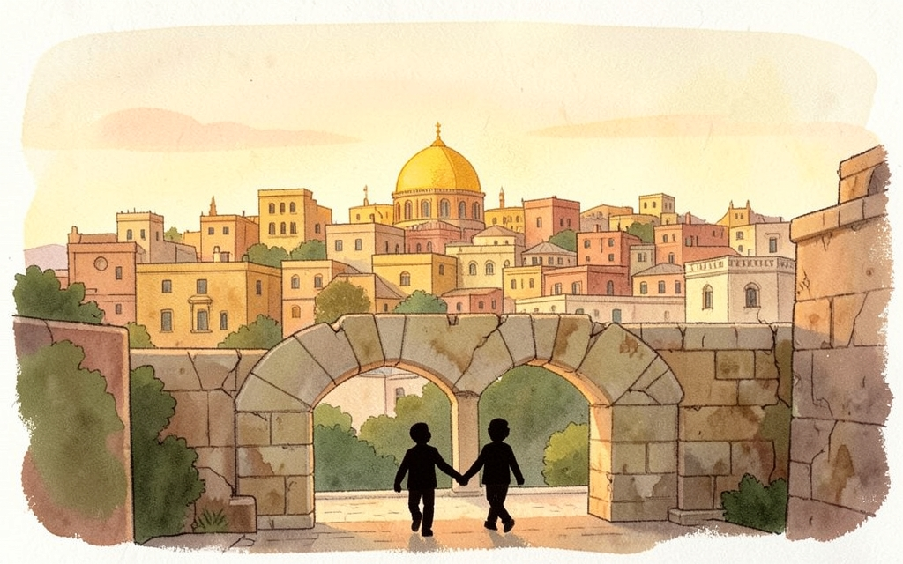
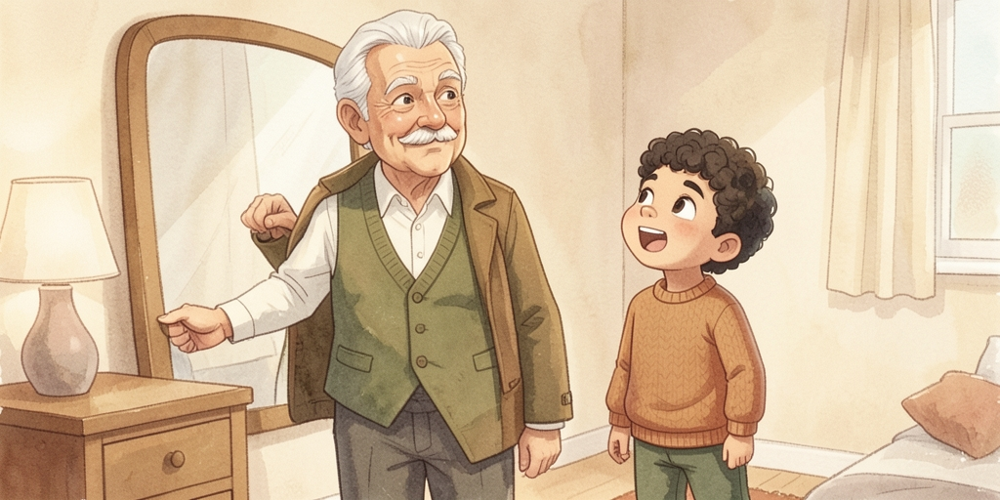
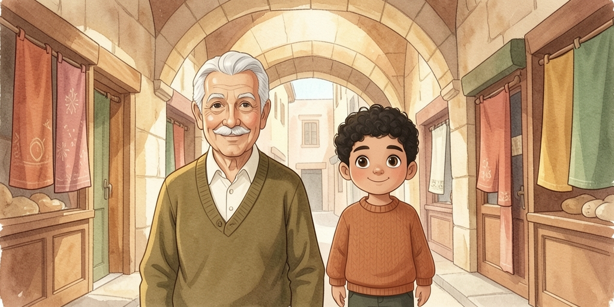
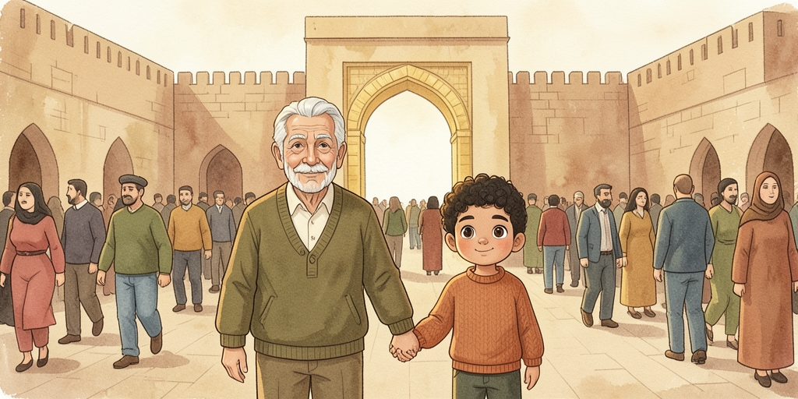
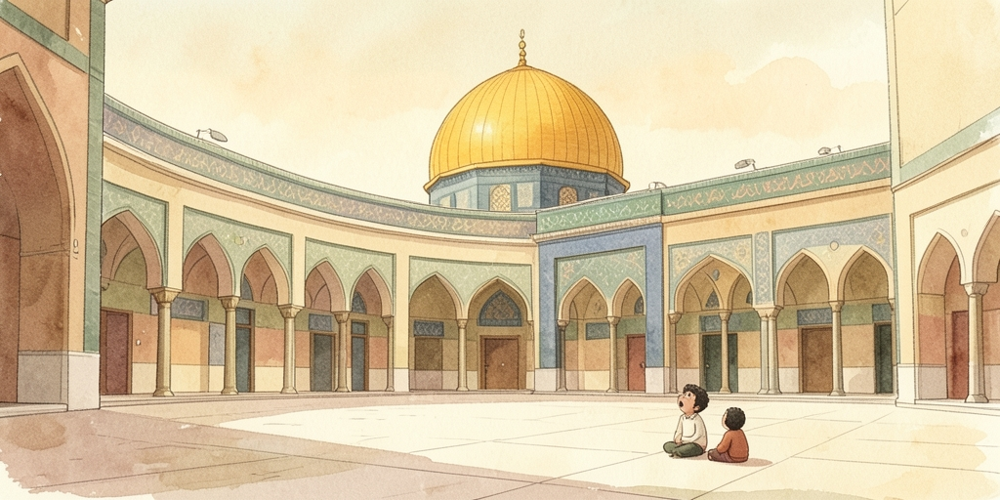
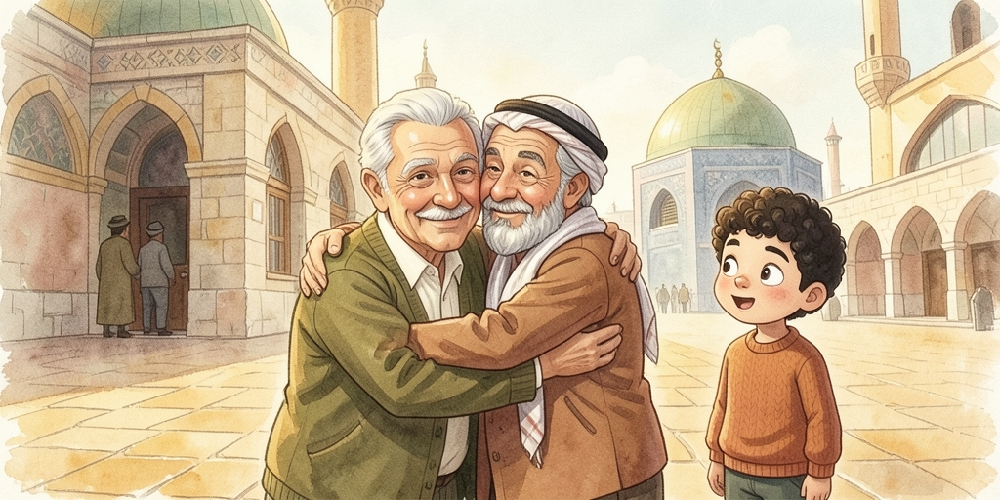
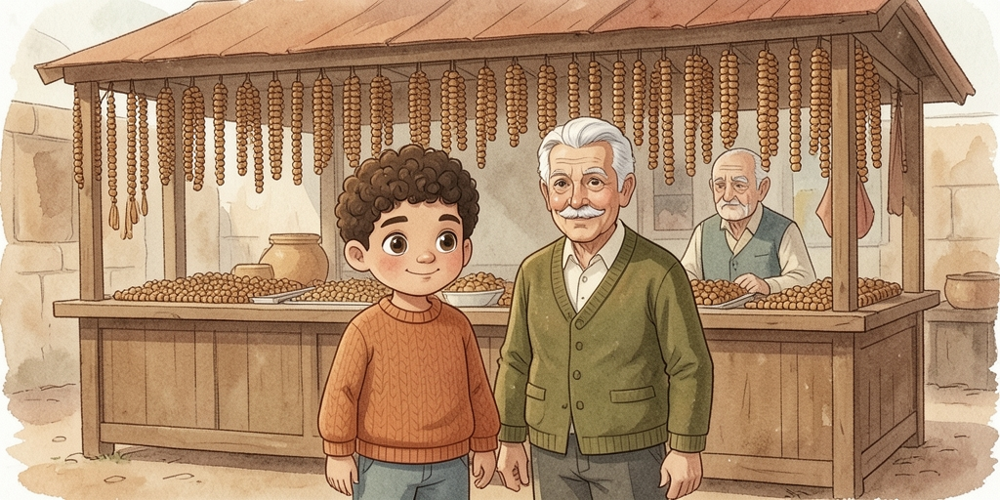
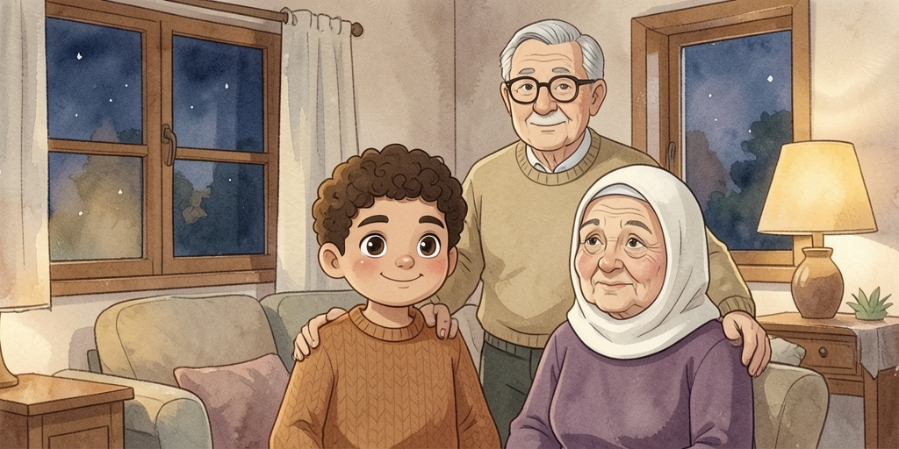

Sami's first Friday at Al-Aqsa with Seedo — through the Old City alleys, the crowd at Damascus Gate, and a chance meeting with an old friend. This book adds "so that", how to report what someone said, and how to say something won't happen.
| البلدة القديمة | il-balad il-qadiime | the Old City |
| المسجد الأقصى | il-masjid il-aqsa | Al-Aqsa Mosque |
| باب العامود | baab il-3amoud | Damascus Gate |
| سوق | souq | market · pl. أسواق aswaaq |

يوم جمعة الصبح، سيدو لبس تيابه الحلوة وقال لسامي:
«يا سيدي، اليوم بدي اخدك وياي عالمسجد الأقصى، أول مرة تصلي فيه معي. بس عشان نوصل بدري، لازم نطلع قبل الأذان بساعة.»
سامي فرح كتير وقال: «أكيد يا سيدو! بس ليش لازم نطلع هلق بالذات؟»
سيدو ضحك وقال: «عشان الشوارع بتزحم قبل الصلاة بشوي، وما بدي نتأخر.»
On Friday morning, Grandpa put on his nice clothes and said to Sami: "My dear, today I want to take you with me to Al-Aqsa Mosque, the first time you'll pray there with me. But so that we arrive early, we have to leave an hour before the call to prayer." Sami was very happy and said: "Sure, Grandpa! But why do we have to leave right now specifically?" Grandpa laughed and said: "Because the streets get a bit crowded before the prayer, and I don't want us to be late."

مشيوا سوا بأزقة البلدة القديمة، بين دكاكين البهارات والقماش.
سيدو حكى لسامي إنه هالسوق قديم كتير، وإنه جده هو كمان كان يمشي بنفس الطريق.
سامي شم ريحة القهوة والبهارات وقال: «سيدو، شو هالريحة الحلوة يلي بكل مكان؟»
سيدو قاله: «هاي ريحة القدس يا سيدي. ما رح تنساها طول عمرك.»
They walked together through the alleys of the Old City, between the spice shops and the fabric shops. Grandpa told Sami that this market is very old, and that his own grandfather used to walk the same path. Sami smelled the coffee and spices and said: "Grandpa, what's this lovely smell that's everywhere?" Grandpa said to him: "That's the smell of Jerusalem, my dear. You won't forget it your whole life."

قرب باب العامود، صار في زحمة كبيرة وناس كتير ماشية بكل الاتجاهات.
سيدو مسك ايد سامي وقال: «امسك ايدي منيح، عشان ما تضيع مني بهالزحمة.»
سامي مسك ايده بقوة وقال: «ما رح ارخيها ابدا، وعده!»
Near Damascus Gate, a big crowd built up, with lots of people walking in every direction. Grandpa held Sami's hand and said: "Hold my hand tightly, so you don't get lost from me in this crowd." Sami gripped his hand hard and said: "I won't let go, ever, I promise!"

لما وصلوا لباحة المسجد، وقف سامي مبهور. الباحة كانت واسعة كتير، وقبة الصخرة الذهبية لامعة تحت الشمس.
سيدو قاله بصوت هادي: «هون، الكل بيصير أهدى. حتى الأولاد بيمشوا شوي شوي.»
سامي حس براحة غريبة، وقعد جنب سيدو بهدوء لحد ما بلشت الصلاة.
When they reached the courtyard of the mosque, Sami stood there amazed. The courtyard was very wide, and the Dome of the Rock's gold shone under the sun. Grandpa said to him quietly: "Here, everyone becomes calmer. Even the children walk more slowly." Sami felt a strange sense of peace, and sat beside Grandpa quietly until the prayer began.

بعد الصلاة، صادفوا رجل عجوز عارف سيدو من زمان.
الرجل عانق سيدو وقال لسامي: «يا سلام! هاد حفيدك؟ سيدك كان يلعب معي هون وأنا صغير، قبل ما تولد إنت بكتير!»
سيدو ضحك وقال: «إي والله، كنا نتسابق لحد سور البلدة ورجعة!»
سامي ضحك وسأل: «سيدو، مين كان يفوز أكتر؟»
After the prayer, they ran into an old man who had known Grandpa for years. The man embraced Grandpa and said to Sami: "Well I never! Is this your grandson? Your grandpa used to play with me here when I was little, long before you were born!" Grandpa laughed and said: "Yes indeed, we used to race to the city wall and back!" Sami laughed and asked: "Grandpa, who used to win more?"

وهم راجعين عالبيت، مروا عالسوق، وسامي شاف محل بياع فيه سبح خشب حلوة.
سأل البياع: «قديش هاي السبحة؟» البياع قال: «خمسين شيقل بس ليك.»
سامي فكر وقال لسيدو: «ما رح اشتريها إذا كانت غالية هيك، بدي دور على شي أرخص.»
سيدو ابتسم وقال: «هلق صرت تفهم قيمة المصاري. منيح يا سيدي.»
On their way back home, they passed through the market, and Sami saw a shop selling nice wooden prayer beads. He asked the seller: "How much is this?" The seller said: "Fifty shekels, just for you." Sami thought and said to Grandpa: "I won't buy it if it's this expensive, I want to look for something cheaper." Grandpa smiled and said: "Now you're starting to understand the value of money. Well done, my dear."

بالليل، سامي قعد يحكي لتيتا عن كل شي شافه: الأزقة، والمسجد، والرجل يلي كان صاحب سيدو زمان.
تيتا سمعت بابتسامة وقالت: «شفت؟ القدس مش بس مكان، هي حكاية كل عيلتنا.»
سيدو حط ايده على كتف سامي وقال: «وبكرة، رح تصير إنت يلي تحكي هاي الحكاية لولادك.»
At night, Sami sat telling Grandma about everything he'd seen: the alleyways, the mosque, and the man who had been Grandpa's friend long ago. Grandma listened with a smile and said: "See? Jerusalem isn't just a place, it's the story of our whole family." Grandpa put his hand on Sami's shoulder and said: "And one day, you'll be the one telling this story to your kids."
Getting ready, and finding your way through the Old City.
| تياب | tyaab | clothes |
| الأذان | il-azaan | the call to prayer |
| بالذات | bi-zaato | specifically, exactly (that one) |
| بتزحم | btiz7am | it gets crowded |
| أزقة | azqe | alleyways · sg. زقاق zqaaq |
| حكى ... إنه | 7aka ... inno | told ... that (he/it) — reporting speech |
| شم | shamm | he smelled |
| طول عمرك | tuul 3umrak | your whole life |
| ضاع | daa3 | he got lost · يضيع ydii3 |
| وعد | w3ad | a promise · also "I promise!" on its own |
| باحة | baa7a | a courtyard |
| مبهور | mabhour | amazed, dazzled |
| بهدوء | bi-hudou2 | calmly · هادي haadi calm |
| صادف | saadaf | he ran into (someone) by chance |
| حفيد | 7afeed | grandson |
| تسابق | tsaabaq | to race each other |
| فاز | faaz | he won · يفوز yfouz |
| قديش | qaddeesh | how much (asking a price) |
| أرخص | ar5as | cheaper · رخيص ar5iis cheap |
| قيمة | qeeme | value, worth |
"So that", reporting what someone said, and saying something won't happen.
Like بدّي / لازم / ممكن, the verb after عشان drops its بـ:
امسك ايدي عشان ما تضيع. imsik eedi 3ashaan ma tdii3.
Hold my hand so you don't get lost.
عشان can also just mean "because" — context tells you which:
عشان الشوارع بتزحم. 3ashaan ish-shawaari3 btiz7am. Because the streets get crowded.
Put إنه (for "he/it") or إنها (for "she/it") straight after a verb of speaking, then the reported sentence follows normally:
| حكى إنه تعبان | 7aka inno ta3baan | he said that he's tired |
| قالت إنها جاهزة | 2aalat inneha jaahza | she said that she's ready |
| حكى إنه السوق قديم | 7aka inno is-souq qadiim | he said that the market is old |
Put ما before رح to negate the future — this is what you'll hear
most; مش رح is also fine and means the same thing:
ما رح تنساها. ma ra7 tinsaaha. You won't forget it.
ما رح اشتريها إذا كانت غالية. ma ra7 ashtriiha iza kaanet 8aalye.
I won't buy it if it's expensive.
قديش هاي؟ qaddeesh hayy? How much is this? — the one phrase every market conversation starts with.
Purpose clauses, reported speech, and the negative future — all from this book.
١) بدنا نطلع بدري ____ نوصل قبل الزحمة.
٢) امسك ايدي ____ ما تضيع.
سيدو قال: «أنا تعبان.» → سيدو قال ____ تعبان.
تيتا قالت: «الأكل جاهز.» → تيتا قالت ____ الأكل جاهز.
١) I won't buy it if it's expensive.
٢) He told me that the market is old.
٣) Hold my hand so you don't get lost.